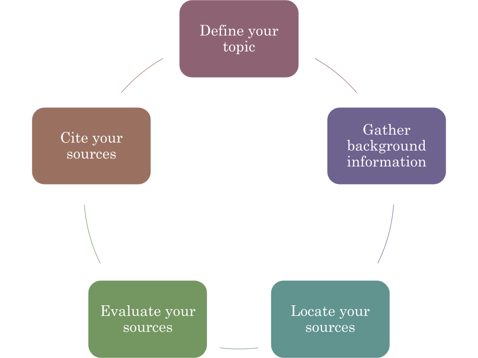
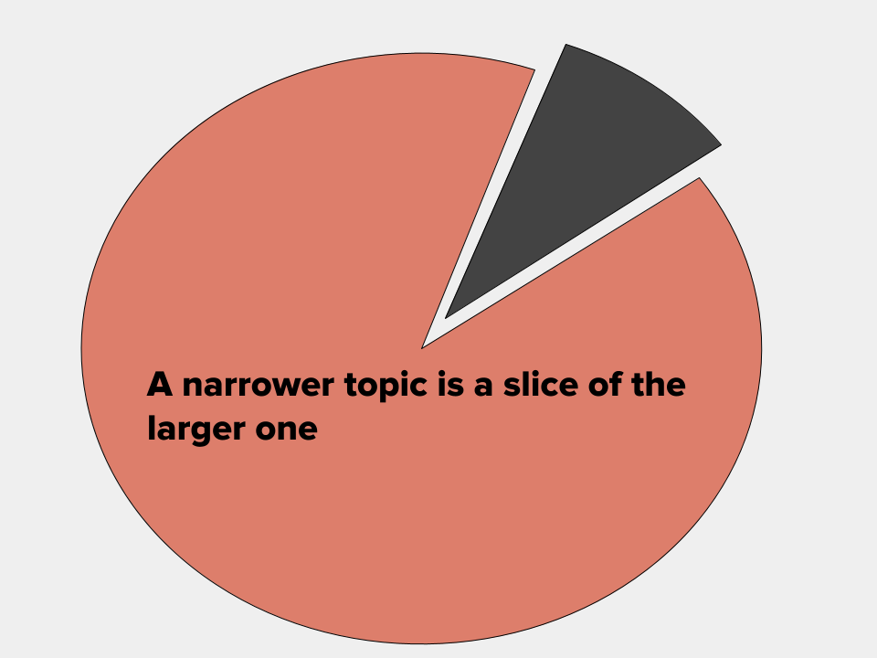
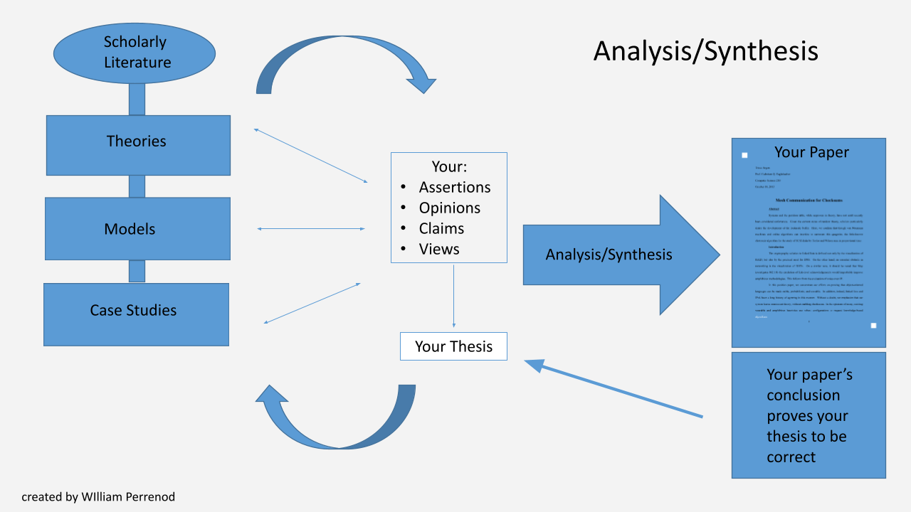

Archival work and Teaching Aids
Sluberski Film Series
Through my work as the Sluberski Film Series director I have organized over 15 community screenings for audiences up to 150 people, with two more community screenings remaining, and 10 class screenings to support faculty lessons. As the sole personnel for the series I was responsible for researching films and relevant speakers, licensing screening rights, and organizing screenings by reserving spaces, arranging vendor and speaker payments, ordering catering for up to 150 guests, and hosting events by introducing films and speakers and moderating QA and panel discussions.
The title above links to a separate page with some posters from previous events.
Archival Work
Some of my successful projects include the in-house digitization of the historic student newspaper The Blue and Gold, which ran from 1913-1940 and took four months to complete; The Shields of Christian Education took two months to photograph the shields and update the existing descriptions; and finally, the Archives YouTube channel I started which now includes over 120 digitized VHS and DVD videos. The success of the YouTube channel is reflected in the 188 subscribers and over 34,000+ views to date.
Concordia College NY: Living History
Library Work
Thirteen years of my career have been dedicated to my role as an inter-department collaborator and contributor of academic support services to promote student success. Although my position began as a part-time Interlibrary Loan (ILL) coordinator, my outreach, leadership and engagement in support services has been the true purpose of my work at Concordia College. Over the years my position grew to a full-time position including course reserves, serials processing, reference desk supervision, and book donations. Working in the small academic library setting has allowed me to experience nearly every aspect of the library operations.
I am proud to present my final project for LIS407 a LibGuide on Sound Art.
Teaching Aids
Research Process Simple
Narrowing Topics
Analysis and Synthesis model
